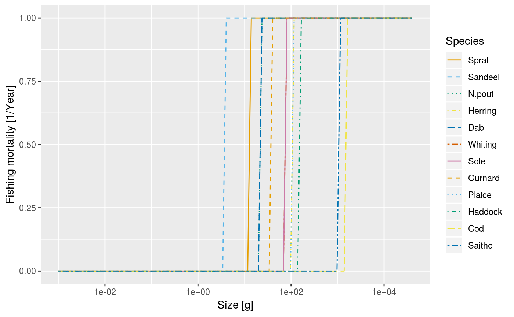
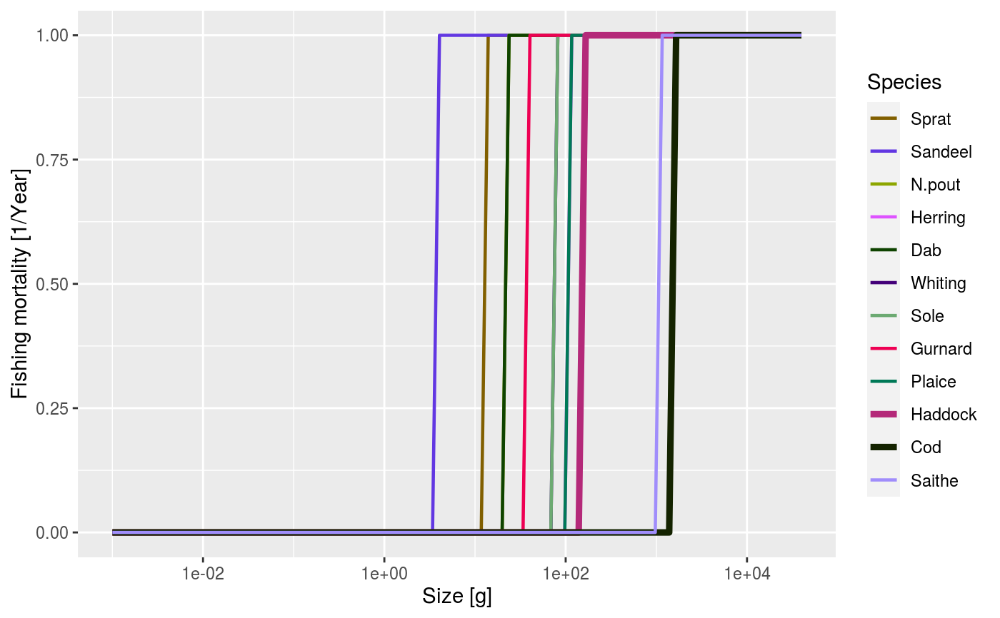

After running a projection, plot the total fishing mortality of each species by size. The total fishing mortality is averaged over the specified time range (a single value for the time range can be used to plot a single time step).
Usage
plotFMort(
object,
species = NULL,
time_range,
all.sizes = FALSE,
highlight = NULL,
return_data = FALSE,
...
)
plotlyFMort(object, species = NULL, time_range, highlight = NULL, ...)Arguments
- object
An object of class MizerSim or MizerParams.
- species
The species to be selected. Optional. By default all target species are selected. A vector of species names, or a numeric vector with the species indices, or a logical vector indicating for each species whether it is to be selected (TRUE) or not.
- time_range
The time range (either a vector of values, a vector of min and max time, or a single value) to average the abundances over. Default is the final time step. Ignored when called with a MizerParams object.
- all.sizes
If TRUE, then fishing mortality is plotted also for sizes outside a species' size range. Default FALSE.
- highlight
Name or vector of names of the species to be highlighted.
- return_data
A boolean value that determines whether the formatted data used for the plot is returned instead of the plot itself. Default value is FALSE
- ...
Other arguments (currently unused)
Value
A ggplot2 object, unless return_data = TRUE, in which case a data
frame with the three variables 'w', 'value', 'Species' is returned.
See also
plotting_functions, getFMort()
Other plotting functions:
animateSpectra(),
plot,MizerSim,missing-method,
plotBiomass(),
plotDiet(),
plotFeedingLevel(),
plotGrowthCurves(),
plotPredMort(),
plotSpectra(),
plotYield(),
plotYieldGear(),
plotting_functions
Examples
# \donttest{
params <- NS_params
sim <- project(params, effort=1, t_max=20, t_save = 2, progress_bar = FALSE)
plotFMort(sim)

plotFMort(sim, highlight = c("Cod", "Haddock"))

# Returning the data frame
fr <- plotFMort(sim, return_data = TRUE)
str(fr)
#> 'data.frame': 934 obs. of 3 variables:
#> $ w : num 0.001 0.001 0.001 0.001 0.001 0.001 0.001 0.001 0.001 0.001 ...
#> $ value : num 0 0 0 0 0 0 0 0 0 0 ...
#> $ Species: chr "Sprat" "Sandeel" "N.pout" "Herring" ...
# }